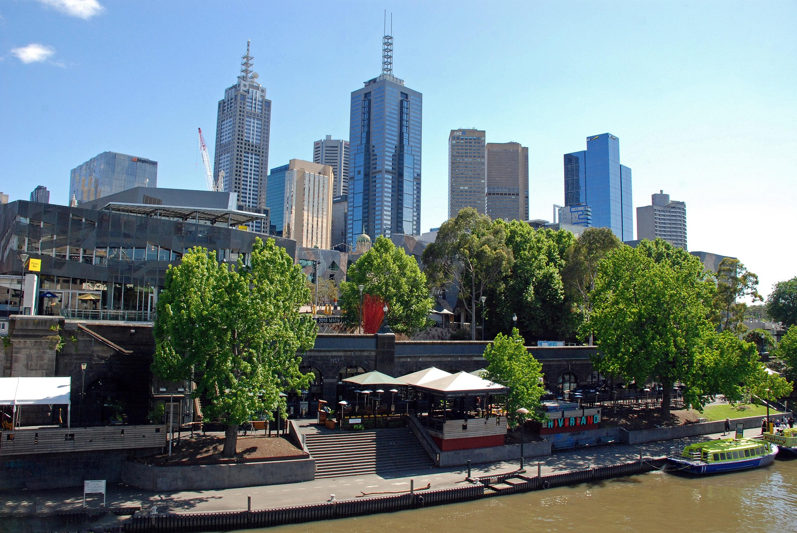
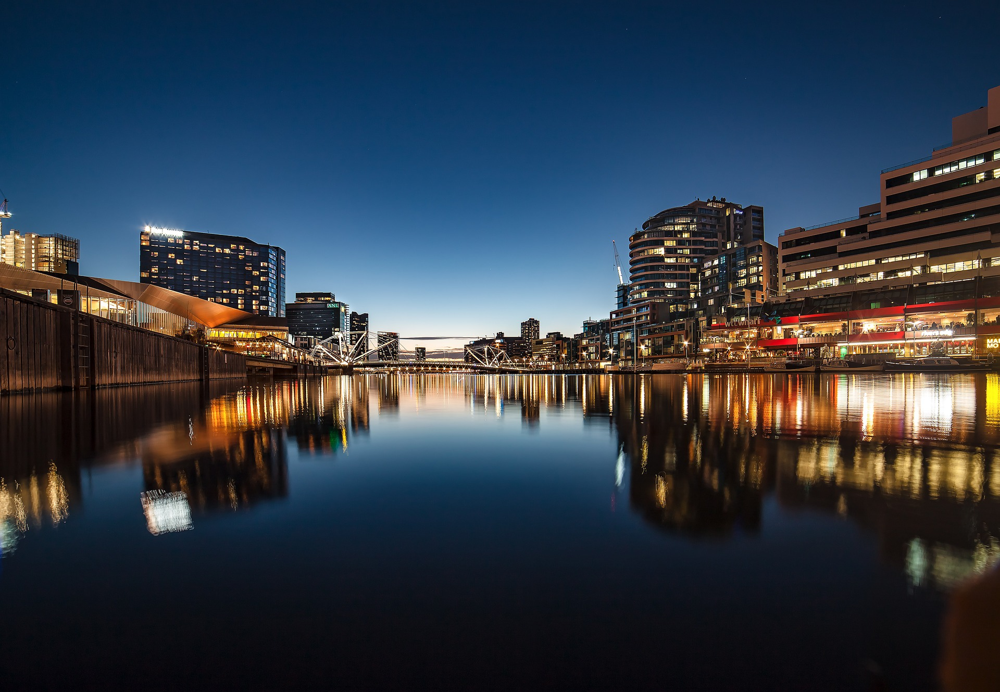

Dados da cidade
| Demografia | População | 5.435.590 hab. |
|---|---|---|
| Densidade populacional | 544 hab./km² | |
| Geografia | Área | 9.993 km² |
| Estado | Victoria | |
| País | Austrália | |
| Website | Câmara de Melbourne | |
Dados geográficos, fotografias e curiosidades sobre a cidade.
| Demografia | População | 5.435.590 hab. |
|---|---|---|
| Densidade populacional | 544 hab./km² | |
| Geografia | Área | 9.993 km² |
| Estado | Victoria | |
| País | Austrália | |
| Website | Câmara de Melbourne | |

